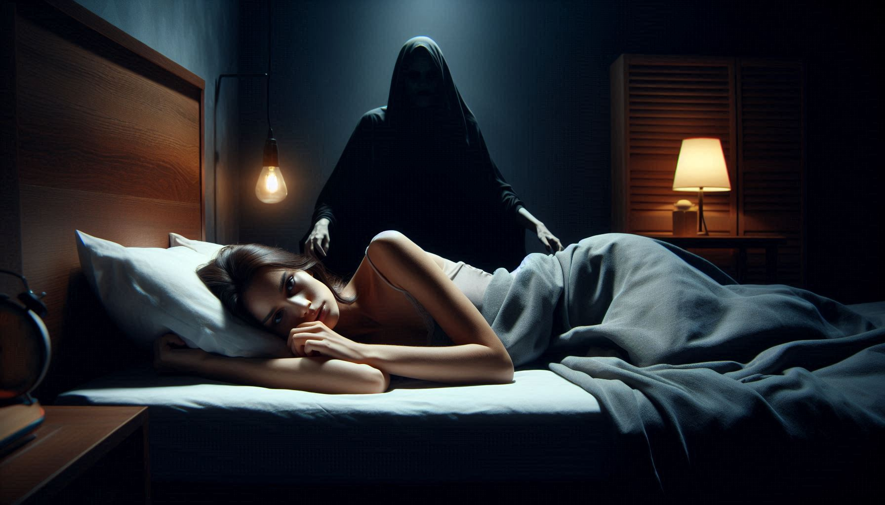
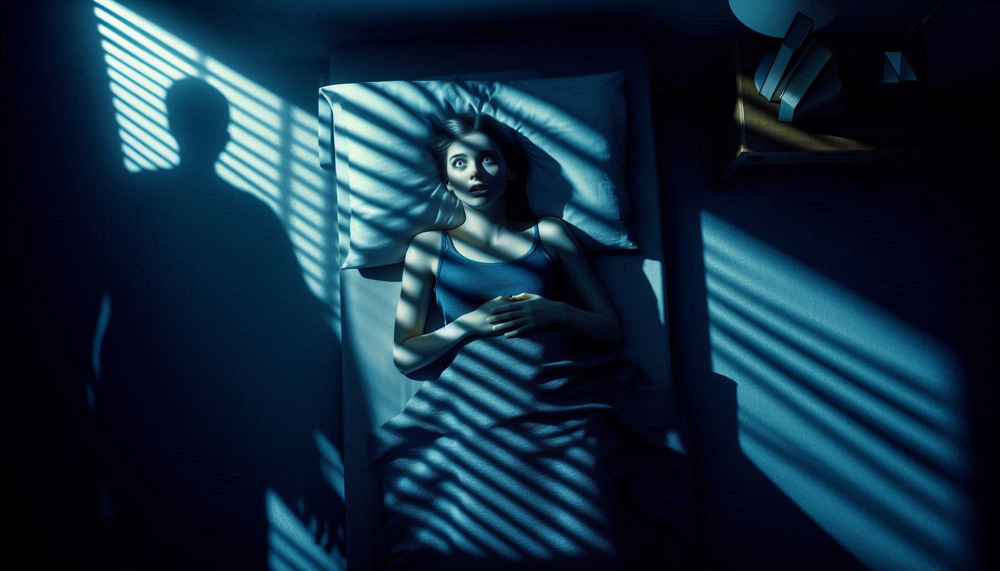

PRISONER OF YOUR OWN MIND

Sleep Paralysis ennal oru person unarnnu ennu thonnum pakshe body move cheyyan kazhiyatha condition aanu. Ithu sathyathil REM (Rapid Eye Movement) sleep-il ninnu brain unarunnathum body 'lock' aayi thanne irikkunnathum thammil ulla oru disconnect aanu.
Nammal swapnam kaanumpol, nammude body 'acting out' cheyyathirikkaan brain REM Atonia enna oru state-ilekk namme kondu povum. Ithu body-ye paralyze cheyyunnu.
Pala sanskarangalilum ithine "demon" sightings aayi interpret cheyyunnundu:
| CULTURE | NAME / MYTH | DESCRIPTION |
|---|---|---|
| Newfoundland | "The Old Hag" | Oru pazhaya sthree nenjathu vannu irikkunna thonnal. |
| Egypt | "The Jinn" | Evil spirit (Jinn) ninte voice korthu pidikkunnu. |
| Thailand | "Phi Am" | Ghost ningale njerippichu kollan nokkunnu. |
| Nigeria | "Ogun Oru" | Nightly warfare where demons attack the mind. |

Pala aalukalum oru Shadow Man-e room-inte corner-il sightings report cheyyunnundu. Science parayunnath, brain-inte extreme fear mode kaaranam oru human shape create cheyyunnathaanu (Pareidolia). Pakshe ellavarum ore shape kaanunnath oru valiya mystery aayi thanne thudarunnu.
Ningal ee state-il poyal exit cheyyan ulla ways:
Sleep Paralysis oru paranormal activity alla, pakshe athu thonnikkunna Fear sathyamaanu. Nammude brain-inte "Safety Mechanism" confuse aakumpol undaakunna oru prathibhasa maathramaanu ithu. Next time ithu sambhavichal, pedikkaruthu—ninte brain unarnnu, body pathukke unarnnu varum ennu orthirikkuka.